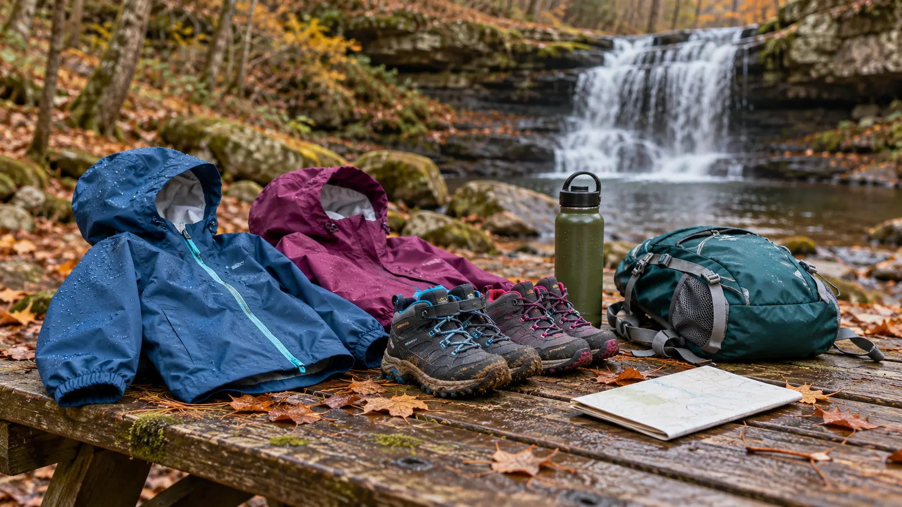

1. Bridge and falls
Cross by the public pedestrian route, stop at the first permitted lower-falls view and let the destination count. Nobody has to earn the waterfall by hiking farther.
MADISON COUNTY · WATERFALL · AUTHORITY-EXPANSION
See the lower falls before anybody negotiates a bigger hike. Then choose one posted trail only if the surface, daylight and family energy still earn it.

The waterfall is the first job, not the reward after a forced march. Park in the public lot, use the pedestrian bridge, orient at the lower-falls side and decide whether the family has earned one trail. Do not promise a mileage number the county facility page does not publish. Use the current posted map, current signs and a time-based turnaround.
For most school-age families, plan 75–120 minutes. The county lists parking, picnic areas, fishing, grills, restrooms, trails and ADA-accessible features. That does not mean every trail, viewpoint or wet-season surface is accessible. Ask for the continuous route that matches the family’s needs rather than treating an amenity icon as a route guarantee.
The county says the main lot is across the creek and connected by a pedestrian bridge to Cascades Hall and the Lower Falls. It also identifies two ADA spaces and three standard spaces inside the gate for eligible visitors or event organizers. Do not follow another vehicle through a gate or assume event parking is public parking. Cascades Hall is locked unless reserved; a reservation is for the building, not a promise that the entire park is private.
Madison County describes ADA-compliant restrooms, including an interior building restroom when the building is open, an exterior restroom and a vault toilet near the parking lot. Confirm the feature, route and opening status that matters. The safest accessibility sentence is a question: “Which parking-to-falls route and restroom are usable today with this device?”
Do not bring swim gear as a negotiation trap. Do not add technical traction devices unless the manufacturer, surface and user skill match; an icy waterfall route is a reason to skip, not an excuse to improvise.
Light rain: use the lower-falls-only route if surfaces remain appropriate and everyone is warm. Heavy rain, thunder, high water, ice or falling limbs: skip the park. Do not use a waterfall as a storm-viewing attraction. Low energy: bridge, first permitted view, one observation card, leave. Food: bring a simple car-safe snack; do not rely on a concession. Restroom uncertainty: call before the drive. Meltdown: return by the known route. Do not add “one quick trail” while regulation is already gone.
For a larger state-park waterfall with a different trail problem, use the Chittenango Falls plan. The Central New York trail picker helps match distance and surface before departure, while the family weather cutoff turns a forecast into a go/modify/stop decision.
Skip when the family needs guaranteed stroller continuity beyond the confirmed accessible route, a child is likely to bolt toward water, the path is icy or storm-damaged, a restroom is essential but unconfirmed, or the goal is swimming. Skip the trail portion when the waterfall-and-bridge visit is already enough.
Reviewed November 1, 2026 using Madison County’s official Delphi Falls County Park page, its park-rules document and the county parks contact page. The lower-falls-first route, 20-minute turnaround, 90-minute schedule and family stop rules are independent editorial planning—not county instructions, an accessibility certification or a live trail report. No affiliate links are attached. Report corrections through About.
MAKE THE WEEK COUNT
Build the plan your family can finish well, then leave enough energy for the next part of the day.
More family plans